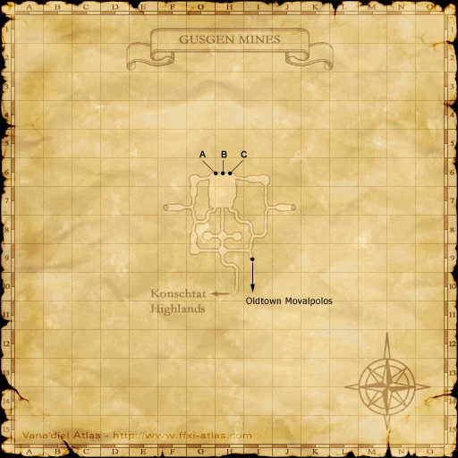
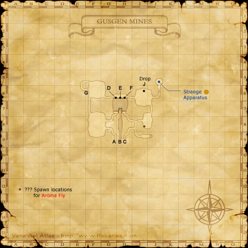
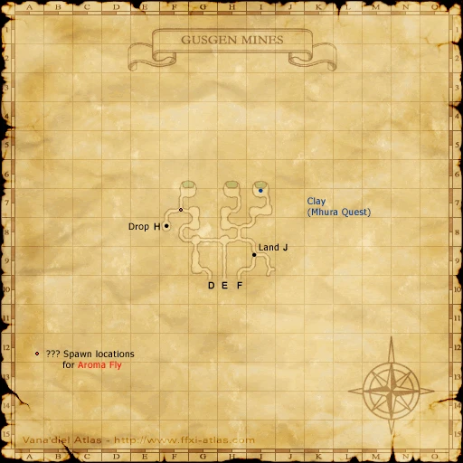
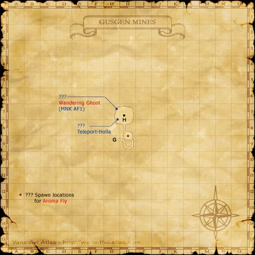

Before you begin
Be allied with Bastok, have Rank 3, and finish the preceding required story steps. Raise Rank Points if the mission is not offered.
Walkthrough
- Accept the mission, prepare Hare Meat and speak with Davyad in Bastok Mines (K-6).
- Go to the ??? at Gusgen Mines (J-7). Trade the meat to summon Blind Moby.
- Defeat it and obtain a Glocolite for each player needing the mission.
- Trade your Glocolite to Rashid in Bastok Mines (H-10).
Important notes
- Optional for rank progression. Bring a meat for each additional spawn you need.
Locations and references
| Place / NPC | Location | Reference |
|---|---|---|
| Blind Moby trigger | Gusgen Mines (J-7) | Location reference |
| Rashid | Bastok Mines (H-10) | Location reference |
Completion and reward
Rank Points
Area maps
Open a zone below, then select a map to enlarge it. Match the named floors and grid coordinates in the steps; these are reference area maps, not a live position tracker.
Bastok Mines


Gusgen Mines












References
HorizonXI Wiki: Bastok 3-2 · LandSandBoat mission definition
The route summary covers the original story. Other servers’ extra rewards, level-cap settings and Trust rules are not promises of Zenith behavior. Confirm battlefield entry conditions in game.
Additional level-75 reference
|
Recommended: Level 30+ and a source of Sneak (Status Effect), or level 40+.
You can skip this mission if you trade enough crystals to a gate guard to fill your rank bar.
Walkthrough
- Speak with Davyad in Bastok Mines.
- Purchase a Hare Meat from the Auction House then head to Gusgen Mines.
- It is recommended to finish the quest A Foreman's Best Friend to obtain map of Gusgen Mines
- Only Sneak is required in Gusgen Mines.
- Enter Gusgen Mines from Konschtat Highlands.
- The ??? is at J-7 of Gusgen Mines.
- Directions:
- At first intersection make a right turn
- At second intersection make a left turn.
- At the fork in the road, take the right fork.
- At the next intersection, take a right turn.
- Clear the area of Bandersnatches, Ghouls, and if necessary Smothered Schmidt. Ore Eaters do not aggro.
- When the area is cleared, trade the Hare Meat to the ???. Blind Moby will appear.
- Pull Blind Moby away from the water where Smothered Schmidt spawns every 30 minutes.
- Once you defeat him he will drop an Rare/Ex item called Glocolite. You will need to defeat this NM for each person that needs this item.
- Trade this item to the gate guard to end the mission.
- Notes
-
- Smothered Schmidt will destroy anybody below level 50. It is best to find someone to dispose of this NM or at the very least take this NM out for a walk around the mines. Alternatively, you can wait a while for it to depop.
- You may skip this mission, as the Gate Guard may offer Mission 3-3 as well.
Game Description
- Mission Orders
- Bring back a rare ore from the Gusgen Mines on the Konschtat Highlands. First ask Davyad, an adventurer residing in the Mines District, how he acquired his load of the ore.
Adapted from Eden Wiki: To the Forsaken Mines · Contributors and history · CC BY-SA 4.0. Revision 8699. Layout, links and optional background text adapted for Zenith.